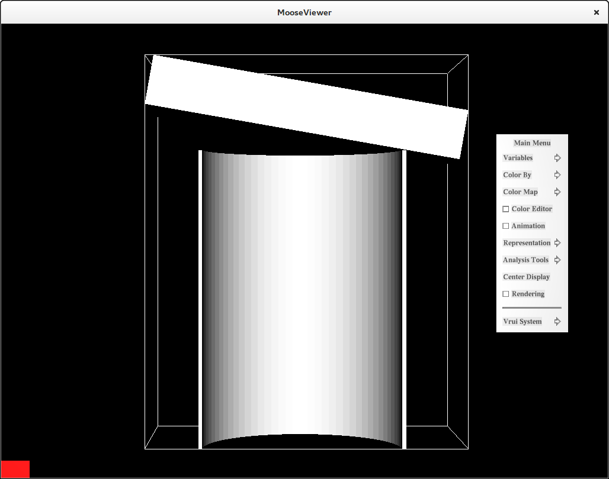
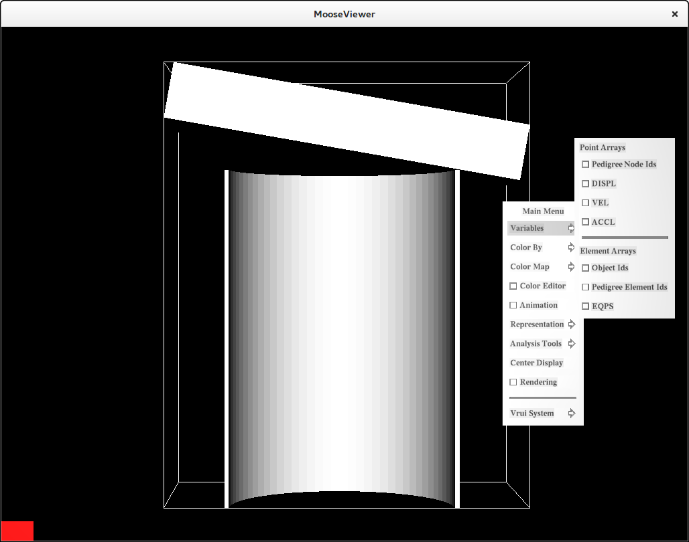
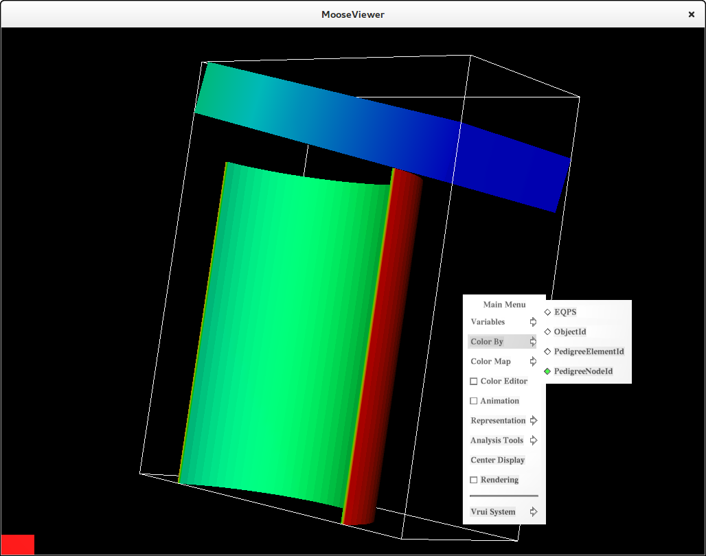
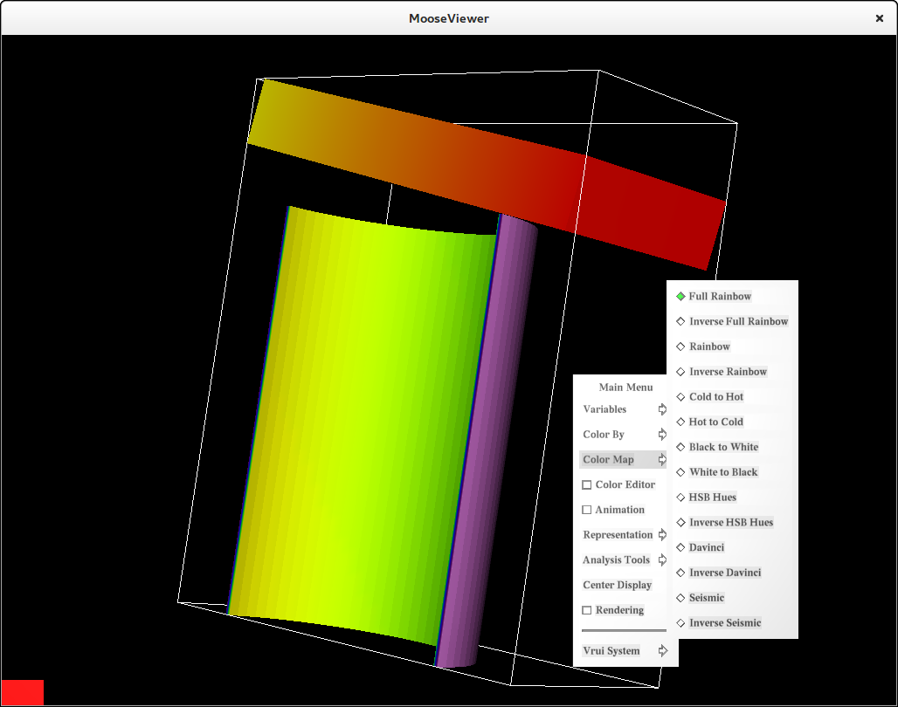
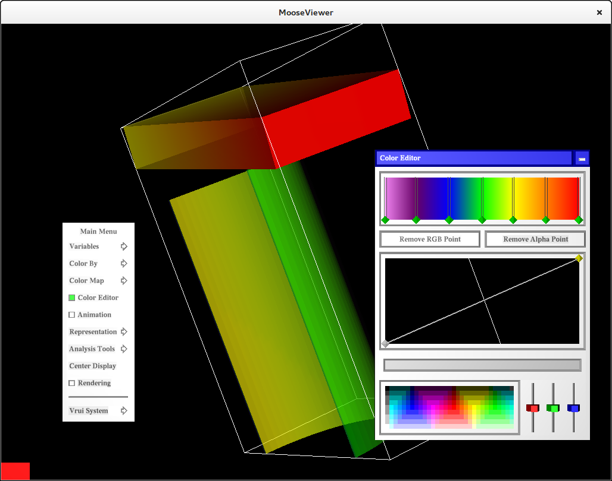
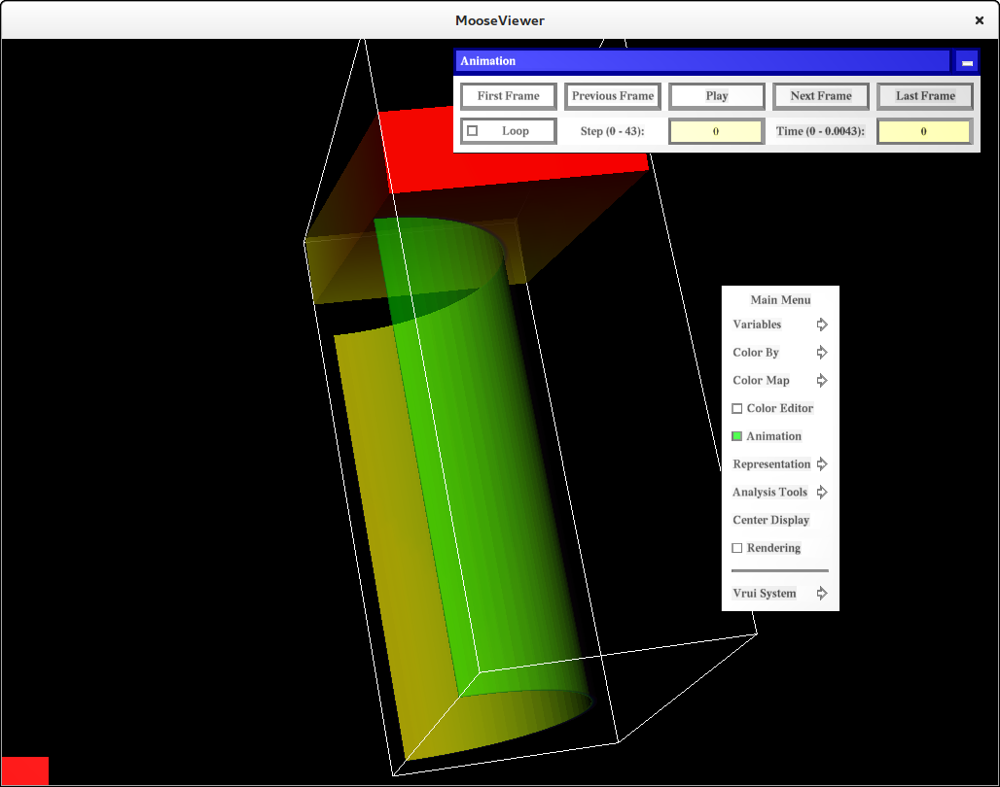
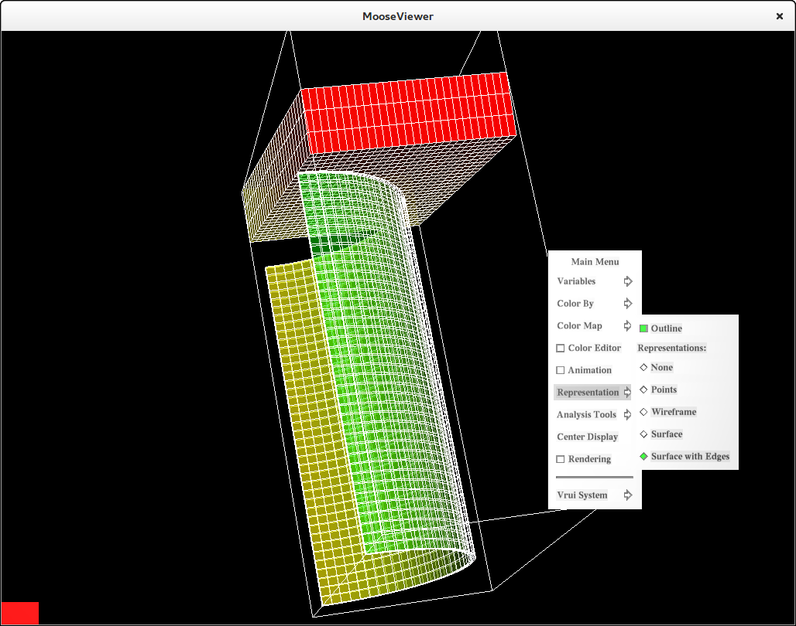
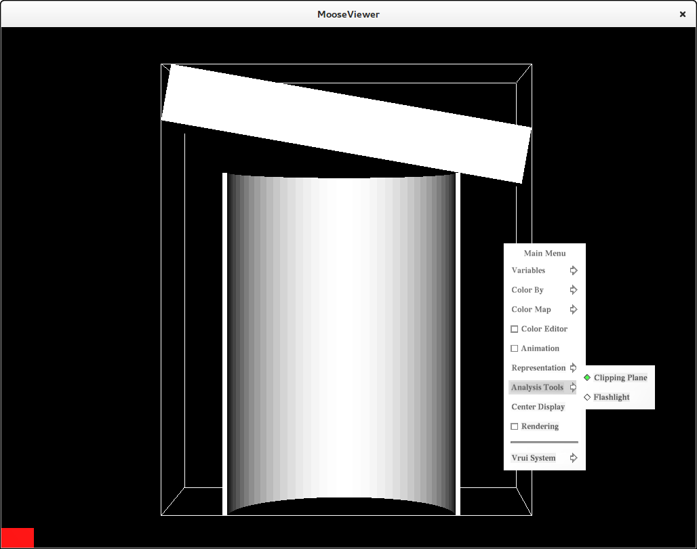
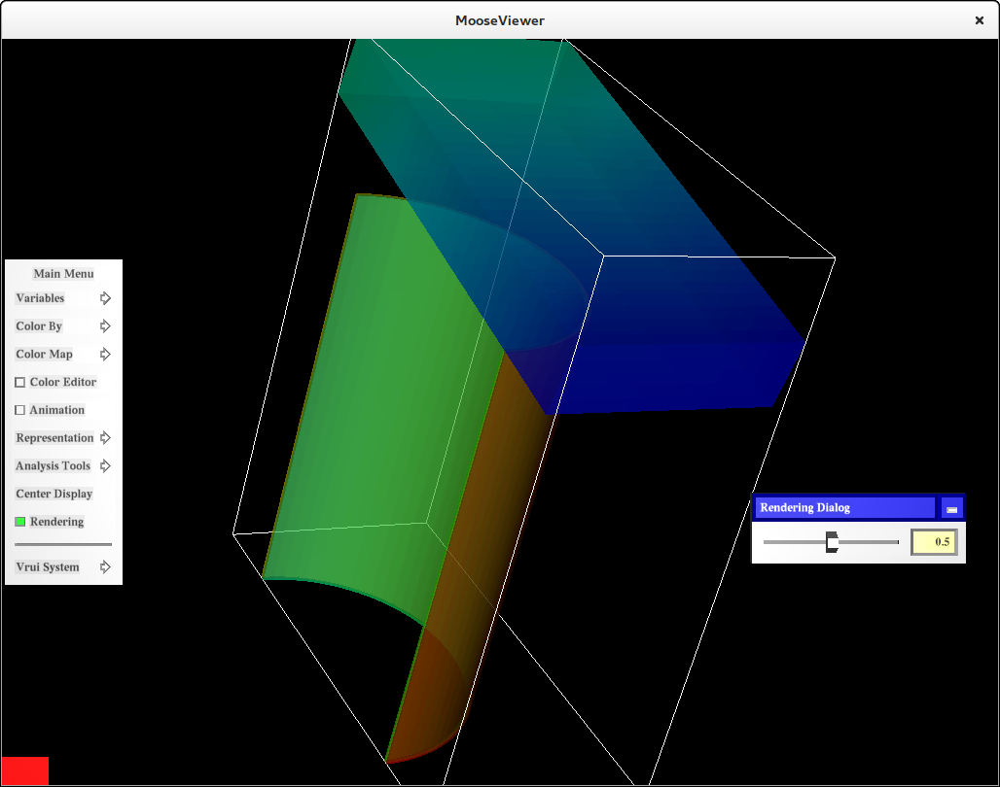

Welcome to MooseViewer
This application demonstrates use of the new vtkRenderingExternal module to visualize ExodusII files in the VRUI context.
For detailed information about the vtkRenderingExternal module, please refer to this blog post.
Supported Operating Systems
- Linux
- Mac OSX
Prerequisites
NOTE: To build MooseViewer along with all its prerequisites, simply build the superbuild from MooseViewerSuperbuild
MooseViewer application requires the following software to be built and installed.
Clone MooseViewer source
The MooseViewer application can be built from source obtained using one of the download links on this page or using the commandline as follows:
$ git clone https://github.com/VruiVTK/MooseViewer.git
The above command creates a directory MooseViewer with the source code.
Configure Instructions
Configure the build using CMake.
Set the following CMake variables:
* VRUI_PKGCONFIG_DIR - Path to pkgconfig directory of your VRUI installation
* VTK_DIR - Path to the VTK build directory
Once all the required variables are set, press generate to generate the makefile.
Build Instructions
Build using the make tool.
$ make
Run MooseViewer
The build step will create an executable MooseViewer under the build directory that can be used to run the application. To get usage instructions for the application:
$ ./MooseViewer -help
To render an ExodusII data (.ex2) file, use the '-f' or '-fileName' argument.
$ ./MooseViewer -f can.ex2
Sample Data Files
Some sample ExodusII files are provided in the data directory.
Sample Configuration Files
A couple of sample configuration files are added to the config
directory.
To use the sample files simply copy the files to the etc directory of
your VRUI installation.
Make sure to backup your existing configuration files before copying the sample ones in.
The sample configuration files are tested to work with an OptiTrack tracker
with a VRPN server of hostname OptiTrackServer. The server uses the
Rigid Body Module to configure two rigid bodies:
- Head
- Wand
3dtv(VRDevices.cfg,
Vrui.cfg) section.
To run the device daemon,
$ /bin/VRDeviceDaemon -rootSection 3dtv To run the application,
$ ./MooseViewer -rootSection 3dtvScreenshots
The following are some screenshots of the application that demonstrate its various aspects. We are using the can.ex2 dataset here (provided in the Sample Data directory.)

Notice that the application calculates the bounds of the dataset and draws an outline around it. The outline can be turned off in the Representation Menu.
Variables
This menu provides access to all the attributes in the ExodusII data file. Selecting the required variables here, ensures that the actual data does not contain unnecessary data arrays. This reduces rendering overhead.

Color By Menu
This is a dynamically created sub-menu that updates as and when the user selects/deselects the variables from the Variables Menu. The user can choose which variable to color the dataset by.

Color Map
This sub-menu can be used to select a different color map for the dataset.

Color Opacity Editor Dialog
This dialog allows editing the color and opacity functions for visualizing the dataset.

Animation Dialog
This dialog allows animating through the various timesteps in the ExodusII dataset. The dialog also show information about how many timesteps are present in the dataset alongwith the current timestep and the time value.

Representation Menu

Analysis Tools
The Analysis Tools are setup to work with the VRUI locator tool. To use one of the analysis tools, toggle the radio button next to it. Hit the button on the Wiimote (or the wand device being used) that you would like to assign the selected analysis tool to. Since, the button is not assigned to any tool right now, it will bring up the default Vrui Menu. Select the 6-DOF Locator. This assigns the selected analysis tool to the button pressed. From now, on this button can be used to invoke the analysis tool it is assigned to.

Rendering
Change the actor level opacity

Demo
The following is a demo video showing most aspects of the MooseViewer application.